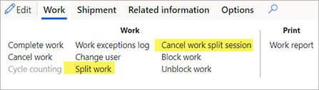
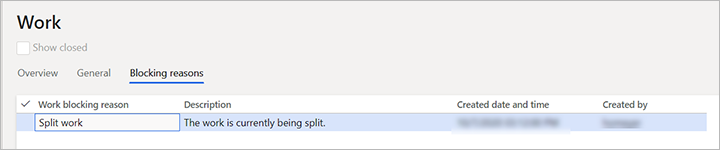

Arbeitsaufteilung
Mit der Arbeitsaufteilungsfunktion können Sie große Arbeitsaufträge (d.h. Arbeitsaufträge, die mehrere Zeilen haben) in mehrere kleinere Arbeitsaufträge aufteilen, die Sie dann mehreren Lagermitarbeitern zuweisen können. Auf diese Weise kann die gleiche Arbeitserstellungsnummer von mehreren Arbeitskräften gleichzeitig entnommen werden.
Important
Sie können nur Arbeitsaufträge aufteilen, die einen Status von Offen oder In Bearbeitung haben.
Einschalten der Arbeitsaufteilungsfunktionalität
Bevor Sie die Arbeitsteilungsfunktionalität verwenden können, müssen Sie die Funktion und ihre voraussetzende Funktion in Ihrem System einschalten. Administratoren können die Funktionsverwaltung verwenden, um den Status der Funktionen zu prüfen und sie bei Bedarf einzuschalten.
Schalten Sie zuerst die vorausgesetzte Organisationsweite Arbeitssperre Funktion ein, wenn sie nicht bereits eingeschaltet ist. Im Arbeitsbereich Funktionsverwaltung ist diese Funktion wie folgt aufgeführt:
- Module: Lagerortverwaltung
- Funktionsname: Organisationsweite Arbeitssperre
Note
Wenn diese Funktion aktiviert ist, wird nach dem Einschalten der Funktion automatisch ein Daten-Upgrade für alle juristischen Entitäten durchgeführt.
Als nächstes schalten Sie die Funktion Arbeitsteilung ein, die wie folgt aufgelistet ist:
- Module: Lagerortverwaltung
- Funktionsname: Arbeitsteilung
Erweiterungen auf den Seiten Arbeitsdetails und Alle Arbeiten
Die Funktion Arbeit teilen fügt dem Reiter Arbeit im Aktivitätsbereich der Seiten Arbeitsdetails und Alle Arbeiten die folgenden beiden Schaltflächen hinzu:
- Arbeit aufteilen - Die aktuelle Arbeits-ID in mehrere kleinere Arbeits-IDs aufteilen, die von separaten Arbeitskräften bearbeitet werden können.
- Arbeitsteilung abbrechen - Bricht die Arbeitsteilung ab und stellt die Arbeit für die Verarbeitung zur Verfügung.

Important
Die Schaltfläche Arbeitsteilung ist nicht verfügbar, wenn eine der folgenden Bedingungen erfüllt ist:
Der Arbeitsstatus ist etwas anderes als Offen oder In Bearbeitung.
Eine Container-ID ist mit der Arbeits-ID verknüpft. (Ein Container kann nicht systematisch aufgeteilt werden, da dies physische Aktionen erfordert.)
Die Arbeit ist mit einem Cluster verknüpft.
Der Typ des Arbeitsauftrags ist etwas anderes als einer der folgenden Typen:
- Aufträge
- Rohmaterialentnahme
- Umlagerungsproblem
Die Arbeit wird gerade von einem anderen Benutzer geteilt. Wenn Sie versuchen, die Aufteilungsseite für Arbeiten zu öffnen, die bereits von einem anderen Benutzer aufgeteilt werden, erhalten Sie die folgende Fehlermeldung: „Die Arbeit mit der ID #### wird gerade geteilt. Versuchen Sie es in ein paar Minuten erneut. Wenn Sie diese Meldung weiterhin erhalten, wenden Sie sich an einen Supervisor.“
Ein neuer Arbeitssperrungsgrund, Arbeit teilen, zeigt an, wenn die Arbeits-ID gerade geteilt wird. Er wird sowohl auf der Seite Arbeit aufteilen als auch in der Lagerort App angezeigt, wenn ein Benutzer versucht, die Arbeit auszuführen. Wenn Sperrgründe verwendet werden, wird der Name des Feldes Blockierte Welle von der Arbeits-ID in Blockiert geändert.
Initiieren einer Arbeitsteilung
Die Funktion fügt eine neue Seite Arbeit aufteilen hinzu, mit der Benutzer Arbeitszeilen von der Arbeits-ID aus aufteilen können. Wenn die Seite zum ersten Mal geöffnet wird, zeigt sie Zeilen an, die einen Arbeitsstatus von Offen haben und die für eine Aufteilung zur Verfügung stehen. Wählen Sie im Aktivitätsbereich Arbeit aufteilen, um die ausgewählte Arbeit zu bearbeiten.
Gehen Sie folgendermaßen vor, um Arbeit zu teilen.
Öffnen Sie eine der folgenden Arbeitsseiten:
- Arbeitsdetails (Lagerortverwaltung > Arbeit > Arbeitsdetails)
- Alle Arbeiten (Lagerortverwaltung > Arbeit > Alle Arbeiten)
Wählen Sie im Raster eine Arbeits-ID aus, die aufgeteilt werden soll. Das Feld Arbeitsauftragstyp muss auf einen der folgenden Werte festgelegt sein:
- Aufträge
- Rohmaterialentnahme
- Umlagerungsproblem
Wählen Sie im Aktivitätsbereich auf der Registerkarte Arbeit in der Gruppe Arbeit die Option Arbeit aufteilen.
Die Seite Arbeit teilen erscheint und zeigt die Arbeitszeilen an, die offen sind und zum Teilen zur Verfügung stehen. Standardmäßig werden nur verfügbare Arbeitszeilen angezeigt. Um alle Zeilen für die Arbeits-ID anzuzeigen (z. B. Zeilen, die eine Arbeitsart von Einlagern haben), aktivieren Sie das Kontrollkästchen Alle Zeilen anzeigen oberhalb des Rasters.
Die folgende Meldung wird angezeigt: „Benutzer können keine Zeilen der Arbeit bearbeiten, bis Sie die Aufteilung beenden und diese Seite schließen.“
Das Feld Arbeitssperrgrund für die aktuelle Arbeit wird auf Arbeit teilen festgelegt, und die Arbeit wird gesperrt.

Wählen Sie die Zeilen aus, die aus der aktuellen Arbeits-ID entfernt und zu einer neuen Arbeits-ID hinzugefügt werden sollen. Folgende Ereignisse treten auf:
Wenn Sie die Arbeit teilen, werden die ausgewählte(n) Zeile(n) aus der ursprünglichen Arbeits-ID storniert und dann in eine neue Arbeits-ID kopiert.
Die vorhandene Struktur der Arbeitsvorlage und der Lagerplatz des Einlagerns (und auch zukünftiger Entnahme-/Einlagerungspaare) bleiben erhalten. Die Werte für die folgenden Felder der Arbeits-ID werden von der ursprünglichen Arbeit in die neue Arbeit kopiert:
- Ladungskennung
- Lieferungskennung
- Arbeitsauftragstyp
- Bestellnummer
- Standort
- Lagerort
- Arbeitspriorität
- Arbeitspoolkennung
- Wellenkennung
- Arbeitserstellungsnummer
Die folgenden Felder werden nicht in die neue Arbeits-ID kopiert:
- Arbeits-ID - Eine neue Arbeits-ID wird aus der entsprechenden Sequenz der Nummer erzeugt.
- Arbeitsstatus - Dieses Feld wird auf Offen festgelegt.
- Gesperrt durch - Dieses Feld ist zunächst auf leer festgelegt.
- Ziel-Ladungsträger-ID - Dieses Feld wird leer gelassen.
- Erstelldatum und -uhrzeit - Dieses Feld ist auf das aktuelle Datum und die aktuelle Uhrzeit festgelegt.
- Blockierte Welle/eingefroren - Dieses Feld wird für die ursprüngliche Arbeits-ID und die neue Arbeits-ID neu berechnet.
Wählen Sie im Aktivitätsbereich Arbeit aufteilen.
Während die Arbeit geteilt wird, wird die folgende Meldung angezeigt: „Bearbeitungsvorgang - Arbeit teilen“. Während diese Meldung sichtbar ist, können Sie den Vorgang abbrechen, indem Sie Abbrechen im Meldungsfeld wählen.
Wenn das Kontrollkästchen Alle Zeilen anzeigen deaktiviert ist, wird die Zeile, die abgespalten und abgebrochen wurde, nicht mehr im Raster angezeigt. Wenn das Kontrollkästchen aktiviert ist, sollten Sie sehen, dass sich der Wert des Feldes Arbeitsstatus für diese Zeile auf Abgebrochen geändert hat.
Die folgende Meldung wird angezeigt, um anzuzeigen, dass die neue Arbeits-ID erstellt worden ist: „Arbeit #### wurde durch Abspaltung von der ursprünglichen Arbeit #### erstellt.“
Andere Zeilen der ursprünglichen Arbeits-ID (z. B. Put-Zeilen) werden nach Bedarf angepasst, um die Zeilen der Arbeit widerzuspiegeln, die eingelagert wurden. Wenn zum Beispiel die ursprüngliche Arbeits-ID eine Put-Zeile für eine Menge von 15 hatte und Pick-Zeilen, die eine Gesamtmenge von 10 haben, eingelegt wurden, wird die neue Put-Menge auf der ursprünglichen Arbeits-ID jetzt 5 sein.
Die neue Arbeit wird nicht sofort einem Benutzer zugewiesen. Sie können sie aber bei Bedarf jetzt einem Benutzer zuweisen, indem Sie die Standardfunktionalität der Seite Arbeitsdetails verwenden.
Important
Sie können nur Arbeits-IDs aufteilen, die zwei oder mehr verfügbare Arbeitszeilen enthalten. Wenn Sie Arbeit aufteilen wählen, wenn nur eine Arbeitszeile vorhanden ist, erhalten Sie die folgende Fehlermeldung: „Mindestens eine Arbeitszeile muss auf der ursprünglichen Arbeit verbleiben.“ In diesem Fall wird keine Aufteilung erfolgen.
Beenden einer Arbeitsteilung
Um die Arbeitsteilung zu beenden, muss der Sperrgrund Arbeitsteilung aufgehoben werden. Es gibt zwei Möglichkeiten, diesen Schritt abzuschließen:
- Der Benutzer, der die Arbeit aufteilt, schließt die Seite Arbeit aufteilen, indem er die Schaltfläche Schließen (X) in der oberen rechten Ecke wählt. Wenn die Seite geschlossen wird, wird der Arbeit teilen-Blockiergrund entfernt. Der Blockiert Status dieser Arbeit wird neu berechnet und, wenn es keine verbleibenden Blockiergründe für diese Arbeit gibt, wird die Arbeit entsperrt.
- Ein beliebiger Benutzer öffnet die Arbeits-ID und wählt die Schaltfläche Arbeitsteilung aufheben im Aktivitätsbereich. Der Arbeitsteilung-Blockiergrund wird entfernt und der Blockiert-Status dieser Arbeit wird neu berechnet, genau wie beim Schließen der Arbeitsteilung-Seite.
Nachdem der Arbeit teilen-Blockierungsgrund entfernt wurde, kann die Arbeit auf dem mobilen Gerät ausgeführt werden, vorausgesetzt, der Blockiert-Status wird auf der Arbeits-ID auf Nein festgelegt.
Benutzersperrung auf der Lagerort App
Wenn Sie versuchen, mit der Lagerort App Entnahmearbeiten gegen eine Arbeits-ID laufen zu lassen, die geteilt wird, erhalten Sie folgende Fehlermeldung: „Die Arbeit mit der ID #### wird gerade geteilt.“ Wenn Sie diese Meldung erhalten, wählen Sie Abbrechen. Sie können dann mit der Bearbeitung anderer Arbeiten fortfahren.
Andere gesperrte Operationen
Alle Operationen, die Arbeitszeilen, Arbeitsbestands-Transaktionen oder Wiederbeschaffungs-Verknüpfungen ändern, die sich auf Arbeit beziehen, die gerade geteilt wird, schlagen fehl, und die folgende Fehlermeldung wird angezeigt: „Die Arbeit mit der ID #### wird gerade geteilt.“